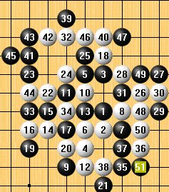
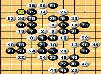

你是最棒滴
你是最棒滴今晚注定是一个不平凡的夜晚，当仿五林的二大高手对决与三手二91桌 我不会棋评，我只能将其中两位精彩对弈的瑞星谱上传到，希望大家从中可以学到一些精彩对弈，从中大家会明白，开局争二中局争三的道里，希望能对大家在对弈中做棋有所帮助，同时在对局中做棋提供一些
（2）
第二局中我只说白的20手，不是最强防，如果白走在黑21的位置，白必胜，具体大家拆
我不会棋评，希望大家见谅，
［此帖子已被 茗弈小刀 在 2009-4-22 20:46:54 编辑过］
第二局图片没看到啊?
刀刀老婆加油你是最棒滴
已修正
第一幅，看似黑强，黑控全局外势，然拆开一看，黑有无数个禁点，白利用禁做文章，似总能起死回生，然此局奥妙无穷，黑只要注意先后次序，胜还是有可能D！个中滋味自几体会8！
茗弈阁 ATNA
第二幅对战图,双方下的较为平衡,后面双方机会均很小,当是和局.关于20手,偶觉得94最强防,能在对战中下出足见其对局面的判断和控制功底,偶是菜菜,仅能发表一点个人见解,欢迎专+指正,谢谢!
茗弈阁 ATNA
 希望能多看到行云流水老师的棋评~
希望能多看到行云流水老师的棋评~